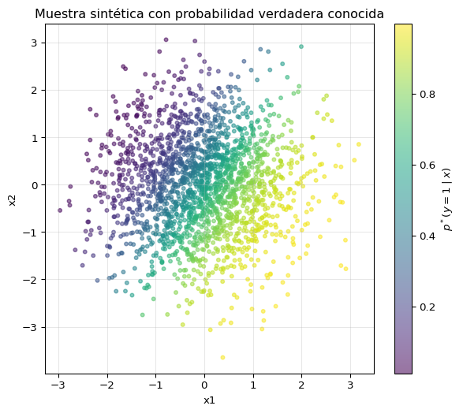
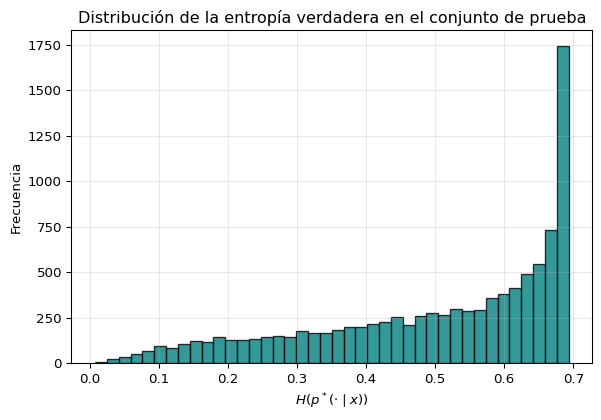

Proyecto: Descomposición sesgo-varianza en clasificación con pérdida de entropía cruzada
Objetivo y motivación
En regresión con error cuadrático, la descomposición sesgo-varianza es un resultado clásico. En clasificación, en cambio, muchos estudiantes aprenden a usar la entropía cruzada sin detenerse a pensar si existe una descomposición análoga, qué forma tiene, y qué significa realmente el “sesgo” o la “varianza” cuando el modelo predice probabilidades y no solo etiquetas.
En este proyecto vas a:
derivar una descomposición exacta del riesgo con pérdida de entropía cruzada;
interpretar los términos resultantes;
verificar numéricamente la identidad en un problema sintético donde la distribución verdadera \(p^*(y\mid x)\) es conocida;
explorar cómo cambian los términos al variar el tamaño del conjunto de entrenamiento y la regularización.
La idea central es: en clasificación probabilística, la noción correcta de “predictor promedio” no es simplemente el promedio aritmético de las probabilidades predichas. La pérdida logarítmica obliga a usar un promedio distinto, y eso cambia toda la estructura de la descomposición.
Preguntas guía
Al finalizar, deberías poder responder:
¿Qué mide exactamente la entropía cruzada en clasificación?
¿Cuál es el análogo del término irreducible (“ruido”) en este contexto?
¿Qué significa “sesgo” cuando el modelo produce distribuciones de probabilidad?
¿Qué significa “varianza” entre distintos conjuntos de entrenamiento?
¿Por qué el promedio aritmético de las probabilidades no es, en general, el objeto correcto para esta descomposición?
¿Qué papel juega la divergencia de Kullback-Leibler (KL)?
¿Qué cambia al variar el tamaño muestral o la regularización?
Preparación conceptual
Sea \(X\) una variable de entrada y \(Y\in\{1,\dots,K\}\) una etiqueta de clase.
Supondremos que existe una distribución verdadera condicional \[
p^*(y\mid x),
\] y que un algoritmo de aprendizaje, entrenado sobre un conjunto aleatorio \(D\), produce un predictor probabilístico \[
q_D(y\mid x).
\]
La pérdida para una observación \((x,y)\) será la entropía cruzada: \[
\ell(q_D;x,y)=-\log q_D(y\mid x).
\]
El riesgo promedio que nos interesa es \[
\mathcal R
=
\mathbb E_D\,
\mathbb E_{x,y}\big[-\log q_D(y\mid x)\big].
\]
Aquí el promedio es doble:
sobre los datos \((x,y)\),
y sobre los posibles conjuntos de entrenamiento \(D\).
Idea del proyecto
En regresión con error cuadrático, la descomposición sesgo-varianza se escribe alrededor del promedio aritmético del predictor.
En clasificación con pérdida logarítmica, el objeto natural no es el promedio aritmético de \(q_D\), sino un promedio en espacio logarítmico. Esa es una de las ideas principales del proyecto.
Dicho de otra manera: la geometría inducida por la entropía cruzada es distinta de la del error cuadrático.
Parte A: derivación teórica paso a paso
Esta parte debe quedar escrita con claridad en el informe. No basta con citar el resultado final.
Tarea A1: separar un término irreducible
Empieza desde \[
\mathcal R
=
\mathbb E_D\,
\mathbb E_x\,
\mathbb E_{y\mid x}\big[-\log q_D(y\mid x)\big].
\]
Para \(x\) fijo, muestra que \[
\mathbb E_{y\mid x}\big[-\log q_D(y\mid x)\big]
=
H\!\left(p^*(\cdot\mid x)\right)
+
\mathrm{KL}\!\left(
p^*(\cdot\mid x)\,\|\,q_D(\cdot\mid x)
\right),
\] donde \[
H(p^*)=-\sum_y p^*(y\mid x)\log p^*(y\mid x)
\] es la entropía de la distribución verdader y \[
\mathrm{KL}\!\left(
p^*(\cdot\mid x)\,\|\,q_D(\cdot\mid x)
\right) = \sum_y p^*(y\mid x) \log\left(\frac{p^*(y \mid x)}{q_D(y\mid x)}\right)
\] es la distancia de Kullback Lieber entre dos distribuciones de probabilidad
Interpreta el resultado:
el término \(H(p^*)\) es el análogo del “ruido irreducible”;
el exceso de riesgo está controlado por una divergencia KL entre la verdad y el predictor aprendido.
Tarea A2: definir el predictor promedio correcto
Para cada \(x\), define \[
\tilde q(y\mid x)
\propto
\exp\!\Big(
\mathbb E_D[\log q_D(y\mid x)]
\Big).
\]
Debes explicar por qué este predictor no coincide, en general, con el promedio aritmético \[
\bar q(y\mid x)=\mathbb E_D[q_D(y\mid x)].
\]
Pista conceptual: la pérdida logarítmica convierte sumas de logs en productos, y por eso aparece una especie de media geométrica normalizada.
Tarea A3: derivar la descomposición exacta
Debes demostrar que, para cada \(x\), \[
\mathbb E_D
\Big[
\mathrm{KL}(p^*\|q_D)
\Big]
=
\mathrm{KL}(p^*\|\tilde q)
+
\mathbb E_D
\Big[
\mathrm{KL}(\tilde q\|q_D)
\Big].
\]
Aquí, para abreviar notación, se entiende que todas las distribuciones están condicionadas en \(x\).
Luego promedia sobre \(x\), y obtén: \[
\mathcal R
=
\underbrace{
\mathbb E_x\big[H(p^*(\cdot\mid x))\big]
}_{\text{ruido}}
+
\underbrace{
\mathbb E_x\big[
\mathrm{KL}(p^*(\cdot\mid x)\|\tilde q(\cdot\mid x))
\big]
}_{\text{sesgo}}
+
\underbrace{
\mathbb E_x\mathbb E_D\big[
\mathrm{KL}(\tilde q(\cdot\mid x)\|q_D(\cdot\mid x))
\big]
}_{\text{varianza}}.
\]
Tarea A4: interpretación física y estadística
Escribe una breve discusión en tus propias palabras:
Ruido: incertidumbre intrínseca del problema; incluso el mejor predictor posible no puede eliminarla.
Sesgo: distancia entre la distribución verdadera \(p^*\) y el predictor promedio correcto \(\tilde q\).
Varianza: cuánto fluctúan los predictores entrenados con distintos conjuntos de datos alrededor de \(\tilde q\).
Parte B: elegir un problema sintético donde \(p^*(y\mid x)\) sea conocida
Para verificar la identidad empíricamente, necesitas conocer explícitamente la distribución verdadera \(p^*(y\mid x)\). Por eso no debes usar un dataset real como MNIST en la parte principal del proyecto.
Toma \[
x\in\mathbb R^d,\qquad x\sim \mathcal N(0,I_d),
\] y define \[
p^*(y=1\mid x)=\sigma(w^T x+b),
\] donde \[
\sigma(z)=\frac{1}{1+e^{-z}}.
\]
Luego genera parejas \((x, y)\) donde \(y\) vale \(1\) con probabilidad \(p^*(y=1\mid x)\) o si no vale \(0\).
Ventajas:
el problema es simple;
\(p^*(y\mid x)\) se conoce exactamente;
puedes calcular la entropía verdadera en cada \(x\);
el análisis es limpio.
### Parte B: implementación (problema sintético con p*(y|x) conocida)import numpy as npimport matplotlib.pyplot as pltrng = np.random.default_rng(42)# Dimensión baja para facilitar visualizaciones posteriores.d =2w_true = np.array([1.4, -0.9])b_true =0.25def sigmoid(z):return1.0/ (1.0+ np.exp(-z))def p_star_y1_given_x(X):"""Devuelve p*(y=1|x) para un arreglo X de shape (n, d)."""return sigmoid(X @ w_true + b_true)def sample_from_p_star(n_samples, rng, d=d):"""Muestrea x ~ N(0, I_d) y luego y ~ Bernoulli(p*(y=1|x)).""" X = rng.normal(0.0, 1.0, size=(n_samples, d)) p1 = p_star_y1_given_x(X) y = rng.binomial(1, p1)return X, y, p1# Muestra de ejemplo para continuar con las partes C/D.n_example =2000X_example, y_example, p1_example = sample_from_p_star(n_example, rng)print("Problema sintético Parte B listo.")print(f"d = {d}")print(f"w_true = {w_true}, b_true = {b_true}")print(f"X_example shape: {X_example.shape}")print(f"Proporción de clase 1 en la muestra: {y_example.mean():.3f}")# Visualización rápida del problema en 2D.plt.figure(figsize=(7, 6))plt.scatter(X_example[:, 0], X_example[:, 1], c=p1_example, s=12, alpha=0.55, cmap="viridis")plt.colorbar(label=r"$p^*(y=1\mid x)$")plt.xlabel("x1")plt.ylabel("x2")plt.title("Muestra sintética con probabilidad verdadera conocida")plt.grid(True, alpha=0.3)plt.show()
Problema sintético Parte B listo.
d = 2
w_true = [ 1.4 -0.9], b_true = 0.25
X_example shape: (2000, 2)
Proporción de clase 1 en la muestra: 0.530

Parte C: definir el algoritmo de aprendizaje
Debes escoger un modelo probabilístico que entregue probabilidades \(q_D(y\mid x)\). Usa regresión logística regularizada, porque:
es fácil de entrenar;
las probabilidades son naturales;
la interpretación del sesgo y la varianza es limpia;
permite estudiar directamente el efecto de la regularización.
Luego, como extensión opcional, puedes comparar con una red pequeña o con árboles.
### Parte C: implementación (algoritmo de aprendizaje)from sklearn.linear_model import LogisticRegressionfrom sklearn.metrics import log_loss# Seguridad: esta parte asume que ya corriste la celda de la Parte B.required_names = ["sample_from_p_star", "p_star_y1_given_x", "d", "rng"]missing = [name for name in required_names if name notinglobals()]if missing:raiseRuntimeError(f"Faltan variables/funciones de Parte B: {missing}. Ejecuta primero la celda de Parte B.")def train_logistic_model(X_train, y_train, C=1.0, random_state=0):"""Entrena regresión logística regularizada y devuelve un modelo probabilístico q_D(y|x).""" model = LogisticRegression( C=C, solver="lbfgs", max_iter=2000, random_state=random_state, ) model.fit(X_train, y_train)return modeldef predict_q(model, X, eps=1e-10):"""Devuelve probabilidades en formato [q(y=0|x), q(y=1|x)] con clipping numérico.""" p1 = model.predict_proba(X)[:, 1] p1 = np.clip(p1, eps, 1.0- eps) p0 =1.0- p1return np.column_stack([p0, p1])# Demostración mínima de Parte C (modelo + probabilidades q_D).n_train_demo =200n_test_demo =2000C_demo =1.0X_train_demo, y_train_demo, _ = sample_from_p_star(n_train_demo, rng)X_test_demo, _, p1_test_true = sample_from_p_star(n_test_demo, rng)model_demo = train_logistic_model(X_train_demo, y_train_demo, C=C_demo, random_state=123)q_test_demo = predict_q(model_demo, X_test_demo)# Riesgo de entropía cruzada aproximado usando p* conocida en test.# R(q) = E_x[-p*(1|x)log q(1|x) - p*(0|x)log q(0|x)]p0_test_true =1.0- p1_test_truerisk_demo = np.mean(-p1_test_true * np.log(q_test_demo[:, 1]) - p0_test_true * np.log(q_test_demo[:, 0]))# Métrica opcional sobre etiquetas muestreadas para chequeo rápido.y_test_sampled = (rng.random(n_test_demo) < p1_test_true).astype(int)logloss_sampled = log_loss(y_test_sampled, q_test_demo[:, 1])print("Parte C lista: regresión logística regularizada definida.")print(f"C (inverso de regularización) = {C_demo}")print(f"q_test_demo shape = {q_test_demo.shape} # columnas: [q(y=0|x), q(y=1|x)]")print(f"Riesgo CE estimado con p* conocida: {risk_demo:.6f}")print(f"Log-loss sobre etiquetas muestreadas: {logloss_sampled:.6f}")
Parte C lista: regresión logística regularizada definida.
C (inverso de regularización) = 1.0
q_test_demo shape = (2000, 2) # columnas: [q(y=0|x), q(y=1|x)]
Riesgo CE estimado con p* conocida: 0.503324
Log-loss sobre etiquetas muestreadas: 0.502533
Parte D: protocolo empírico paso a paso
Tarea D1: generar un gran conjunto de prueba
Genera un conjunto de prueba grande: \[
\{x_i\}_{i=1}^{N_{\rm prueba}},
\] con \(N_{\rm prueba}\) suficientemente grande, por ejemplo 5000 o 10000.
Para cada \(x_i\), debes poder calcular:
\(p^*(y\mid x_i)\),
\(H(p^*(\cdot\mid x_i))\).
Este conjunto servirá para aproximar promedios sobre \(x\).
### Tarea D1: implementación en Python# Seguridad: D1 requiere utilidades definidas en la Parte B.required_names = ["sample_from_p_star", "p_star_y1_given_x", "d", "rng"]missing = [name for name in required_names if name notinglobals()]if missing:raiseRuntimeError(f"Faltan variables/funciones de Parte B: {missing}. Ejecuta primero la celda de Parte B.")N_test =10000eps_entropy =1e-12# 1) Generar conjunto de prueba grande x_i.X_test_large, y_test_large, p1_test_large = sample_from_p_star(N_test, rng)# 2) Construir p*(y|x_i) para clases {0,1}.p0_test_large =1.0- p1_test_largep_star_test = np.column_stack([p0_test_large, p1_test_large]) # shape: (N_test, 2)# 3) Calcular H(p*(.|x_i)) punto a punto.p_star_clipped = np.clip(p_star_test, eps_entropy, 1.0)H_pstar_test =-np.sum(p_star_clipped * np.log(p_star_clipped), axis=1)print("D1 listo: conjunto de prueba grande generado.")print(f"N_test = {N_test}")print(f"X_test_large shape: {X_test_large.shape}")print(f"p_star_test shape: {p_star_test.shape}")print(f"Entropía promedio E_x[H(p*(.|x))]: {H_pstar_test.mean():.6f}")print(f"Rango de entropía: [{H_pstar_test.min():.6f}, {H_pstar_test.max():.6f}]")# Visualización opcional de diagnóstico.plt.figure(figsize=(7, 4.5))plt.hist(H_pstar_test, bins=40, color="teal", alpha=0.8, edgecolor="black")plt.xlabel(r"$H(p^*(\cdot\mid x))$")plt.ylabel("Frecuencia")plt.title("Distribución de la entropía verdadera en el conjunto de prueba")plt.grid(True, alpha=0.3)plt.show()
D1 listo: conjunto de prueba grande generado.
N_test = 10000
X_test_large shape: (10000, 2)
p_star_test shape: (10000, 2)
Entropía promedio E_x[H(p*(.|x))]: 0.501484
Rango de entropía: [0.007680, 0.693147]

Tarea D2: repetir entrenamiento sobre muchos conjuntos de datos
Fija un tamaño de entrenamiento \(n\). Luego repite para \[
j=1,\dots,M
\] con \(M\) por ejemplo entre 50 y 200:
genera un nuevo conjunto de entrenamiento \(D_j\) de tamaño \(n\);
entrena el clasificador;
evalúa las probabilidades predichas \(q_{D_j}(y\mid x_i)\) sobre todo el conjunto de prueba.
Al final tendrás, para cada punto \(x_i\), muchas predicciones probabilísticas provenientes de distintos consjuntos de datos de entrenamiento.
### Tarea D2: implementación en Python# Seguridad: D2 requiere utilidades de B/C y el test set de D1.required_names = ["sample_from_p_star", "train_logistic_model", "predict_q", "X_test_large", "N_test", "rng"]missing = [name for name in required_names if name notinglobals()]if missing:raiseRuntimeError(f"Faltan variables/funciones previas: {missing}. Ejecuta B, C y D1 antes de D2.")# Hiperparámetros del protocolo D2.n_train_D2 =100M_D2 =100C_D2 =1.0# Almacenará q_{D_j}(y|x_i) para cada dataset j y cada punto x_i del test.# Shape final: (M_D2, N_test, 2)q_models_test = np.empty((M_D2, N_test, 2), dtype=float)for j inrange(M_D2): X_train_j, y_train_j, _ = sample_from_p_star(n_train_D2, rng) model_j = train_logistic_model(X_train_j, y_train_j, C=C_D2, random_state=1000+ j) q_models_test[j] = predict_q(model_j, X_test_large)print("D2 listo: entrenamiento repetido completado.")print(f"n_train_D2 = {n_train_D2}")print(f"M_D2 = {M_D2}")print(f"C_D2 = {C_D2}")print(f"q_models_test shape = {q_models_test.shape} # (M, N_test, 2)")# Diagnóstico rápido: variación entre datasets para p(y=1|x) en test.std_p1_across_models = q_models_test[:, :, 1].std(axis=0)print(f"Desv. estándar media de q(y=1|x) entre datasets: {std_p1_across_models.mean():.6f}")print(f"Rango de esa desviación: [{std_p1_across_models.min():.6f}, {std_p1_across_models.max():.6f}]")
D2 listo: entrenamiento repetido completado.
n_train_D2 = 100
M_D2 = 100
C_D2 = 1.0
q_models_test shape = (100, 10000, 2) # (M, N_test, 2)
Desv. estándar media de q(y=1|x) entre datasets: 0.064066
Rango de esa desviación: [0.006630, 0.178703]
Tarea D3: construir el predictor promedio correcto
Para cada punto de prueba \(x_i\), define \[
\tilde q(y\mid x_i)
\propto
\exp\!\left(
\frac{1}{M}\sum_{j=1}^M \log q_{D_j}(y\mid x_i)
\right).
\]
En clasificación binaria esto se reduce a construir \(\tilde q(1\mid x_i)\) y \(\tilde q(0\mid x_i)\) con esa fórmula y luego normalizar.
Advertencia importante: si alguna predicción es exactamente 0 o 1, el logaritmo explota. Debes evitarlo usando una regularización numérica, por ejemplo: \[
q \leftarrow \mathrm{clip}(q,\varepsilon,1-\varepsilon),
\] con \(\varepsilon\sim 10^{-10}\) o \(10^{-8}\).
### Tarea D3: implementación en Python# Seguridad: D3 requiere las predicciones múltiples de D2.required_names = ["q_models_test", "M_D2", "N_test"]missing = [name for name in required_names if name notinglobals()]if missing:raiseRuntimeError(f"Faltan variables de D2: {missing}. Ejecuta primero la celda de D2.")eps_d3 =1e-10# 1) Clipping para evitar log(0).q_models_test_clipped = np.clip(q_models_test, eps_d3, 1.0- eps_d3)# 2) Promedio en espacio logarítmico: (1/M) * sum_j log q_{D_j}(y|x_i).mean_log_q = np.mean(np.log(q_models_test_clipped), axis=0) # shape: (N_test, 2)# 3) Exponenciar y normalizar por fila para obtener q_tilde(y|x_i).q_tilde_unnorm = np.exp(mean_log_q)q_tilde_test = q_tilde_unnorm / q_tilde_unnorm.sum(axis=1, keepdims=True)q_tilde_test = np.clip(q_tilde_test, eps_d3, 1.0- eps_d3)q_tilde_test = q_tilde_test / q_tilde_test.sum(axis=1, keepdims=True)print("D3 listo: predictor promedio correcto construido.")print(f"q_tilde_test shape: {q_tilde_test.shape} # (N_test, 2)")print(f"Chequeo de normalización (min suma fila, max suma fila): [{q_tilde_test.sum(axis=1).min():.12f}, {q_tilde_test.sum(axis=1).max():.12f}]")print(f"Rango q_tilde(y=1|x): [{q_tilde_test[:, 1].min():.6f}, {q_tilde_test[:, 1].max():.6f}]")# Diagnóstico opcional: comparación con el promedio aritmético (no usado en la descomposición exacta).q_bar_test = q_models_test.mean(axis=0)mean_abs_diff = np.mean(np.abs(q_tilde_test[:, 1] - q_bar_test[:, 1]))print(f"Diferencia media |q_tilde(1|x) - q_bar(1|x)|: {mean_abs_diff:.6e}")
D3 listo: predictor promedio correcto construido.
q_tilde_test shape: (10000, 2) # (N_test, 2)
Chequeo de normalización (min suma fila, max suma fila): [1.000000000000, 1.000000000000]
Rango q_tilde(y=1|x): [0.003670, 0.998250]
Diferencia media |q_tilde(1|x) - q_bar(1|x)|: 5.960398e-03
Tarea D4: estimar los tres términos
Debes estimar numéricamente los términos de la descomposición.
Debes reportar el residuo \[
\Delta
=
\widehat{\mathcal R}
-
\left(
\widehat{\mathrm{Ruido}}
+
\widehat{\mathrm{Sesgo}}
+
\widehat{\mathrm{Varianza}}
\right),
\] y discutir por qué no es exactamente cero en la práctica (precisión finita, clipping, error Monte Carlo, etc.).
### Tareas D5 y D6: implementación en Python# Seguridad: D5/D6 requieren D4 (ruido, sesgo, varianza) y predicciones múltiples.required_names = ["p_star_test", "q_models_test", "ruido_hat", "sesgo_hat", "varianza_hat", "M_D2", "N_test"]missing = [name for name in required_names if name notinglobals()]if missing:raiseRuntimeError(f"Faltan variables para D5/D6: {missing}. Ejecuta D1-D4 antes de esta celda.")eps_d56 =1e-10# Clipping numérico para estabilidad en logaritmos.p_star_d56 = np.clip(p_star_test, eps_d56, 1.0- eps_d56)q_models_d56 = np.clip(q_models_test, eps_d56, 1.0- eps_d56)# D5) Riesgo total:# R_hat = (1/(M*N_test)) * sum_{j,i} [-sum_y p*(y|x_i) log q_{D_j}(y|x_i)]cross_entropy_per_model_x =-np.sum(p_star_d56[None, :, :] * np.log(q_models_d56), axis=2)risk_hat = np.mean(cross_entropy_per_model_x)# D6) Verificación de identidad y residuo.rhs_hat = ruido_hat + sesgo_hat + varianza_hatdelta_hat = risk_hat - rhs_hatrelative_delta = delta_hat /max(abs(risk_hat), 1e-12)print("D5 listo: riesgo total estimado.")print(f"Riesgo total R_hat = {risk_hat:.6f}")print()print("D6 listo: verificación de la identidad.")print(f"Ruido + Sesgo + Varianza = {rhs_hat:.6f}")print(f"Delta = R_hat - (Ruido + Sesgo + Varianza) = {delta_hat:.6e}")print(f"Delta relativo = {relative_delta:.6e}")ifabs(delta_hat) <1e-6:print("Conclusión: la identidad se verifica numéricamente con error muy pequeño.")else:print("Conclusión: la identidad se cumple aproximadamente; el residuo se atribuye a clipping y error Monte Carlo.")
D5 listo: riesgo total estimado.
Riesgo total R_hat = 0.515205
D6 listo: verificación de la identidad.
Ruido + Sesgo + Varianza = 0.515205
Delta = R_hat - (Ruido + Sesgo + Varianza) = 1.110223e-16
Delta relativo = 2.154916e-16
Conclusión: la identidad se verifica numéricamente con error muy pequeño.
Parte E: experimentos numéricos
Experimento E1: variar el tamaño del conjunto de entrenamiento
Elige varios tamaños: \[
n\in\{20,50,100,200,500\}
\] (o algo parecido, según tu tiempo computacional).
Para cada \(n\), repite todo el protocolo y grafica:
ruido,
sesgo,
varianza,
riesgo total,
como función de \(n\).
Pregunta a responder:
¿cómo cambian sesgo y varianza al aumentar la cantidad de datos?
### Experimento E1: implementación en Python# Seguridad: E1 requiere las utilidades de las Partes B/C.required_names = ["sample_from_p_star", "train_logistic_model", "predict_q", "rng"]missing = [name for name in required_names if name notinglobals()]if missing:raiseRuntimeError(f"Faltan utilidades para E1: {missing}. Ejecuta primero las celdas de las Partes B y C." )def sample_training_dataset_with_both_classes(n_samples, rng_local, max_attempts=200):"""Muestrea un dataset de entrenamiento que contenga ambas clases."""for _ inrange(max_attempts): X_train, y_train, _ = sample_from_p_star(n_samples, rng_local)if np.unique(y_train).size ==2:return X_train, y_trainraiseRuntimeError(f"No fue posible generar un dataset con ambas clases para n={n_samples}." )# Configuración del experimento.n_values_E1 = np.array([20, 50, 100, 200, 500, 1000, 2000])M_E1 =100C_E1 =1.0N_test_E1 =10000eps_E1 =1e-10rng_E1 = np.random.default_rng(2026)# Test fijo para comparar los distintos tamaños n bajo las mismas x_i.X_test_E1, _, p1_test_E1 = sample_from_p_star(N_test_E1, rng_E1)p_star_test_E1 = np.column_stack([1.0- p1_test_E1, p1_test_E1])p_star_test_E1 = np.clip(p_star_test_E1, eps_E1, 1.0- eps_E1)H_pstar_test_E1 =-np.sum(p_star_test_E1 * np.log(p_star_test_E1), axis=1)E1_results = []for n_train in n_values_E1: q_models_test_E1 = np.empty((M_E1, N_test_E1, 2), dtype=float)for j inrange(M_E1): X_train_j, y_train_j = sample_training_dataset_with_both_classes(n_train, rng_E1) model_j = train_logistic_model(X_train_j, y_train_j, C=C_E1, random_state=5000+ j) q_models_test_E1[j] = predict_q(model_j, X_test_E1, eps=eps_E1) q_models_test_E1 = np.clip(q_models_test_E1, eps_E1, 1.0- eps_E1)# Predictor promedio correcto: media geométrica normalizada. mean_log_q_E1 = np.mean(np.log(q_models_test_E1), axis=0) q_tilde_E1 = np.exp(mean_log_q_E1) q_tilde_E1 = q_tilde_E1 / q_tilde_E1.sum(axis=1, keepdims=True) q_tilde_E1 = np.clip(q_tilde_E1, eps_E1, 1.0- eps_E1) q_tilde_E1 = q_tilde_E1 / q_tilde_E1.sum(axis=1, keepdims=True) ruido_E1 = np.mean(H_pstar_test_E1) sesgo_E1 = np.mean(np.sum(p_star_test_E1 * np.log(p_star_test_E1 / q_tilde_E1), axis=1)) varianza_E1 = np.mean( np.sum(q_tilde_E1[None, :, :] * np.log(q_tilde_E1[None, :, :] / q_models_test_E1), axis=2) ) riesgo_E1 = np.mean(-np.sum(p_star_test_E1[None, :, :] * np.log(q_models_test_E1), axis=2)) delta_E1 = riesgo_E1 - (ruido_E1 + sesgo_E1 + varianza_E1) E1_results.append( {"n": int(n_train),"ruido": float(ruido_E1),"sesgo": float(sesgo_E1),"varianza": float(varianza_E1),"riesgo": float(riesgo_E1),"delta": float(delta_E1), } )# Conversión a arreglos para graficar.n_plot_E1 = np.array([row["n"] for row in E1_results])ruido_plot_E1 = np.array([row["ruido"] for row in E1_results])sesgo_plot_E1 = np.array([row["sesgo"] for row in E1_results])varianza_plot_E1 = np.array([row["varianza"] for row in E1_results])riesgo_plot_E1 = np.array([row["riesgo"] for row in E1_results])delta_plot_E1 = np.array([row["delta"] for row in E1_results])print("Experimento E1 listo.")print(f"Tamaños explorados: {n_plot_E1.tolist()}")print(f"M_E1 = {M_E1}, C_E1 = {C_E1}, N_test_E1 = {N_test_E1}")print()print(f"{'n':>6}{'ruido':>12}{'sesgo':>12}{'varianza':>12}{'riesgo':>12}{'delta':>12}")for row in E1_results:print(f"{row['n']:6d}{row['ruido']:12.6f}{row['sesgo']:12.6f} "f"{row['varianza']:12.6f}{row['riesgo']:12.6f}{row['delta']:12.3e}" )plt.figure(figsize=(9, 5.5))plt.plot(n_plot_E1, ruido_plot_E1, marker="o", linewidth=2, label="Ruido")plt.plot(n_plot_E1, sesgo_plot_E1, marker="s", linewidth=2, label="Sesgo")plt.plot(n_plot_E1, varianza_plot_E1, marker="^", linewidth=2, label="Varianza")plt.plot(n_plot_E1, riesgo_plot_E1, marker="d", linewidth=2, label="Riesgo total")plt.xscale("log")plt.xlabel("Tamaño de entrenamiento n")plt.ylabel("Valor estimado")plt.title("Experimento E1: descomposición sesgo-varianza vs tamaño de entrenamiento")plt.grid(True, alpha=0.3)plt.legend()plt.show()
Preguntas conceptuales que debes responder en la presentación
¿Por qué la entropía verdadera \(H(p^*)\) juega el papel de ruido irreducible?
¿Por qué la divergencia KL aparece de forma natural?
¿Por qué la noción correcta de predictor promedio depende de la pérdida elegida?
¿Qué interpretación intuitiva tiene el término de varianza?
¿Qué pasa con la descomposición si el modelo devuelve probabilidades exactamente 0 o 1?
¿En qué sentido esta descomposición se parece y en qué sentido se diferencia de la clásica para error cuadrático?
Recomendaciones prácticas
Empieza con un problema binario y de baja dimensión.
Usa un conjunto de test grande para aproximar bien los promedios sobre \(x\).
Repite sobre muchos datasets de entrenamiento: si \(M\) es muy pequeño, la estimación de la varianza será ruidosa.
Haz clipping de probabilidades antes de tomar logaritmos.
Primero verifica la identidad en un setup simple; recién después agregues complejidad.
Esqueleto conceptual del algoritmo
La lógica computacional del proyecto es:
fijar un problema sintético con \(p^*(y\mid x)\) conocida;
generar un conjunto grande de test;
repetir entrenamiento sobre muchos datasets independientes;
guardar todas las probabilidades predichas en test;
construir \(\tilde q\);
calcular ruido, sesgo, varianza y riesgo;
verificar la identidad;
repetir al variar \(n\) y la regularización.
En pseudocódigo:
```text generar conjunto de test grande
for cada tamaño n: for cada valor de regularización lambda: inicializar lista de predicciones vacía
for j = 1, ..., M:
generar dataset de entrenamiento D_j
entrenar clasificador con tamaño n y regularización lambda
evaluar probabilidades q_{D_j}(y|x_i) en el test
guardar predicciones
construir q_tilde a partir del promedio de log-probabilidades
calcular ruido
calcular sesgo
calcular varianza
calcular riesgo total
verificar identidad